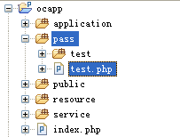

通道（pass目录）的使用
通道是用于绕过单入口的限制而独立出来的目录通道，里面的PHP文件可以直接HTTP访问。
一般用于引入第三方程序，比如论坛系统或支付系统等。
1、通道目录
通道目录，是当前Web应用中public/pass目录。
该目录需要手动在Web根目录新建。
2、通道文件的执行
通道使用时很简单，直接访问其中的PHP文件即可。比如：http://localhost/pass/test.php。
3、调用控制器动作
如果要在通道中的PHP文件调用某个控制器动作，可使用Invoke类。
具体步骤如下：
（1）正确加载Invoke类文件
（2）调用Invoke::init()初始化框架
init(rootPath, fileSelf)
参数说明：
| 名称 |
描述 |
| rootPath |
必填。当前Web应用目录。即public的上层目录。 |
| fileSelf |
必填。当前文件路径，一般只要传递“__FILE__”即可。 |
（3）调用Invoke::run()方法执行控制器动作
其中，根目录的路径尽量使用dirname()生成的相对路径，考虑到兼容性。
4、实例
如下实例，在pass目录中的test.php中调用user/view控制器动作，并传递id=13参数，
（a）文件路径截图

（b）pass/test.php中调用代码：
/**
* User: Administrator
* Date: 16-4-27
*/
//加载Invoke文件
require_once dirname(__DIR__) . '/ocara/system/library/Core/Invoke.php';
//初始化框架
Ocara\Invoke::init(dirname(dirname(__DIR__)), __FILE__);
//执行控制器动作
Ocara\Invoke::run('/user/view', array('id' => 13));
（b）执行文件
浏览器中执行文件：http://localhost/ocapp/pass/test.php。
如果要用PHP命令执行，参见PHP命令执行中的实例。